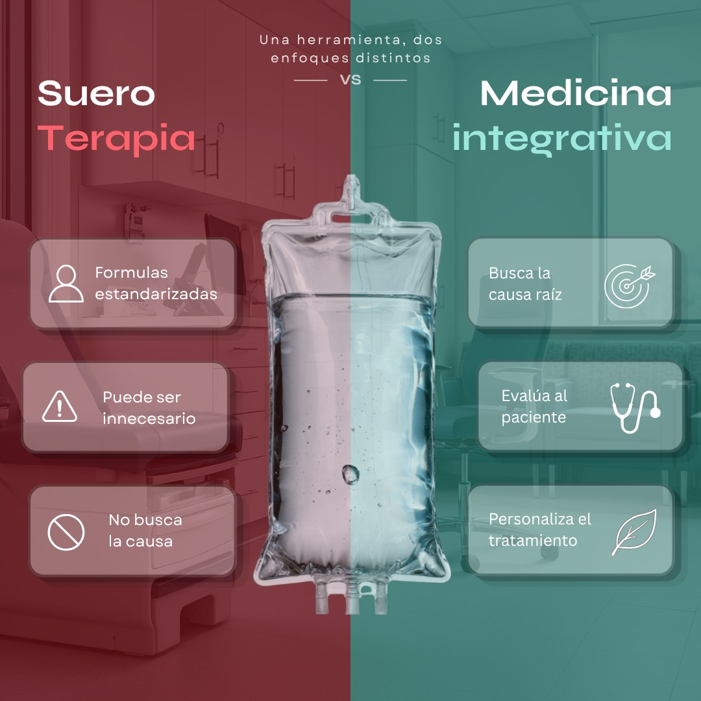

Los IV drips se han vuelto cada vez más populares. Hoy es común encontrar sueros para la energía, las defensas, la recuperación, el estrés o el “detox”, y por eso muchas personas han empezado a relacionarlos directamente con la medicina integrativa.
La asociación parece lógica: ambos pueden utilizar vitaminas, minerales y tratamientos intravenosos. Sin embargo, que dos tratamientos se vean parecidos no significa que hayan sido indicados de la misma manera. La verdadera diferencia empieza mucho antes de colocar la vía.
¿Qué es realmente un “suero” y para qué sirve?
Un “suero” es, en términos simples, una forma de administrar líquidos, medicamentos, vitaminas, minerales u otras sustancias directamente a través de una vena. En medicina puede utilizarse para hidratar, administrar medicamentos o corregir determinadas deficiencias cuando existe una razón para hacerlo.
La vía intravenosa tiene una ventaja evidente: permite que las sustancias lleguen directamente al torrente sanguíneo. Precisamente por eso puede parecer una opción más potente o efectiva que otras alternativas. Pero que algo llegue más directamente al organismo no significa necesariamente que sea lo que tu cuerpo necesita. Y ahí es donde la elección del tratamiento empieza a importar más que la vía utilizada.
01
Cuando el suero se convierte en el tratamiento
En muchos servicios de IV drips, el proceso empieza con una lista de productos: un suero para la energía, otro para las defensas, otro para la recuperación. El paciente identifica cómo se siente y selecciona la opción que parece corresponder a ese síntoma.
El problema es que un síntoma puede decir mucho sobre cómo te sientes y muy poco sobre lo que realmente está ocurriendo. El cansancio, por ejemplo, puede estar relacionado con una deficiencia, pero también con el sueño, el estrés, una alteración hormonal, una infección o muchas otras causas. Si se administra un tratamiento antes de entender cuál de ellas está presente, existe la posibilidad de tratar la sensación sin llegar a comprender el problema.
Por eso, la diferencia comienza con una pregunta: en lugar de pensar “¿qué suero sirve para esto?”, quizá primero habría que preguntarse:
“¿Por qué me está pasando esto?”
02
¿Cuándo puede ser innecesario o incluso perjudicial?
Parte del atractivo de los sueros está en una idea bastante intuitiva: si una sustancia se administra directamente en la sangre, debería funcionar mejor. Sin embargo, una absorción más directa no significa automáticamente un mejor tratamiento.
Si existe una necesidad concreta, la vía intravenosa puede ser muy útil. Pero si el organismo no necesita determinada sustancia, recibir una mayor cantidad no garantiza un mayor beneficio. Además, sigue siendo un procedimiento médico, por lo que factores como la dosis, la preparación, los antecedentes del paciente y las posibles reacciones también deben tenerse en cuenta.
Aquí aparece una de las preguntas más importantes de todo el tema:
Si todavía no sabemos qué está causando el problema, ¿cómo sabemos qué debería contener el suero?
03
Cómo aborda la terapia intravenosa la medicina integrativa
En medicina integrativa, el orden cambia. El punto de partida no es decidir qué administrar, sino intentar comprender qué está ocurriendo en el paciente.
Para hacerlo, pueden revisarse sus síntomas, antecedentes, alimentación, medicamentos, sueño, estrés y otros factores relevantes. Dependiendo del caso, también puede ser necesario revisar exámenes o investigar un poco más antes de tomar una decisión.
Solo después aparece el tratamiento. A veces puede ser una terapia intravenosa y otras veces puede ser necesario trabajar sobre la alimentación, el descanso, otra condición médica o una combinación de diferentes estrategias. Incluso puede ocurrir que, después de evaluar al paciente, no exista ninguna razón para colocar un suero.
Eso no hace que la terapia intravenosa sea mejor o peor. Simplemente la coloca en el lugar que le corresponde: como una de las herramientas disponibles, elegida cuando el caso realmente lo justifica.
04
Entonces, ¿sueroterapia o medicina integrativa?
La diferencia entre ambas no está necesariamente en el uso de una terapia intravenosa, sino en el contexto clínico que la justifica. Un mismo suero puede formar parte de un tratamiento bien indicado o utilizarse sin una evaluación suficiente. Por eso, más que comparar únicamente el contenido de la bolsa, es importante considerar cómo se llegó a esa decisión y qué objetivo se busca alcanzar.

Curiosamente, ambos caminos podrían terminar con el mismo paciente recibiendo una terapia intravenosa. Incluso podrían utilizar ingredientes similares. Lo que cambia es todo lo que ocurrió antes de preparar la bolsa.
05
¿Qué ocurre cuando llevamos esta diferencia a casos reales?
La teoría resulta mucho más clara cuando observamos lo que ha ocurrido en estudios y casos médicos reales. Y aquí aparece algo interesante: el problema no siempre es que el suero “no funcione”. A veces puede generar una sensación de mejoría y, aun así, no demostrar que está tratando mejor el problema.
Un buen ejemplo es el Myers’ Cocktail, una mezcla intravenosa de vitaminas y minerales utilizada desde hace años para diferentes síntomas. En un ensayo controlado con 34 personas con fibromialgia, quienes recibieron el cóctel reportaron mejorías en dolor, estado de ánimo y calidad de vida. Hasta ahí podría parecer una historia de éxito. Sin embargo…
Continúa en Patreon
El resto de este artículo es para suscriptores.
Los estudios, el caso publicado de una paciente que terminó en diálisis, el ensayo de JAMA con 764 personas y las conclusiones completas están en mi Patreon.
Suscríbete al Patreon →Acceso inmediato a este y a los demás artículos
Escrito por
Dr. Andrés Felipe OsorioMedicina integrativa en Armenia, Quindío. Más de 7 años buscando la causa antes que el síntoma.